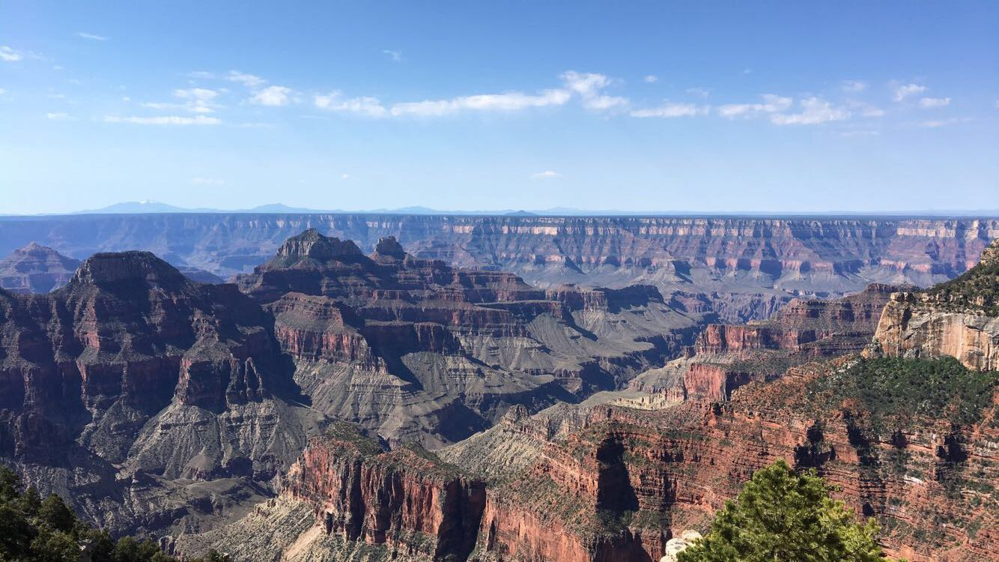

Backpacking the Grand Canyon
August 8, 2017
Bret and I woke up around 5 am, showered, and shoveled a few handfuls of cereal into our mouths. (Imagine eating Raisin Bran without milk.) After breakfast, we walked out toward the edge of the Grand Canyon to catch the sunrise. As the minutes passed, the sun slowly illuminated the sky, casting large shadows deep into the canyon. I felt the warmth on my face.
We started walking down the dirt and gravel road to the Ranger Station, where we would attempt to get backcountry permits to camp inside the canyon. (Bret and I had planned this trip on a whim, not knowing that hikers apply for permits months in advance.) Fortunately, we happened to be the first people in line and received passes for two nights. Excited, we hurried back to the lodge and grabbed our gear. This was the start to a great adventure.
Within 20 minutes, we reached the North Kaibab Trailhead. We started down the path, pivoting back-and-forth along the switchbacks. In no time, we came across some beautiful sights: a large slab of rock jutting into the canyon allowed hikers to peer out at the red and orange striations in the canyon walls. Looking out from this platform, I could see the route that we were about to take to the South Rim.
We continued along the narrow trail, each step getting deeper into the canyon. After about one mile, we came across two guys, Dan and Joe, at a water fountain and struck up conversation. Dan and Joe were themselves recent acquaintances who met a few days earlier on another hike. Each was embarking on a solo cross-country journey but decided that some company would add to the experience. Our brief conversation ended with an invitation to hike together and share the campground. And so, our group grew to four people and we continued on the hot path toward the first campsite.
In a few hours we reached camp and removed the heavy packs from our backs. Along the trail we met a solo traveler who recommended we visit a hidden waterfall—Ribbon Falls—that was a short detour off Kaibab. So, after resting for a bit, Joe, Bret, and I went searching for this secluded waterfall that, according to the traveler, comprised three minor falls.
The site was beautiful. Water rushed from the top of the canyon and fell onto a massive rock formation covered in wet moss. We all climbed the formation and showered in the ice-cold water that came down in globs. Once sufficiently cold, we climbed down and maneuvered through the rocky pool at the base of the falls to access the lower cave.
For Bret and me, dinner that night consisted of warmed beans and beef jerky. We didn't pack food with much nutritional value besides calories; in fact, a good part of our diet was cliff bars and cosmic brownies, which reminded me of lunchtime in elementary school.
We decided to be bold (and stupidly frugal) and camp without a tent. After all, what signifies manhood better than sleeping out west under the stars? Well, that ended up being one of the best decisions we made that trip because at 2 am, Joe woke us up to look at the night sky. In that part of the country, where the desert has almost zero light pollution, observers can see the Milky Way stretch across the sky from east to west. The stars were so bright that we could see the tent and bushes surrounding the camp site.
In the morning, we all parted ways: Bret and I continued toward the South Rim while Dan and Joe returned back to their cars. This second leg of the hike was flat and cool. We started at about 7 am, which allowed us to walk in shade for the next few hours.
We eventually reached the second campsite, named Bright Angel, which was a flat, sandy area bordering a creek about a half mile from the Colorado River. With nothing else to do, we hung our packs from some metal pipes (recommended to prevent squirrels from eating our food), ate some brownies, and headed off to the river.
The river was about 40 feet wide with green-tinted water and a strong current. The water was frigid, but the outside temperature was earily nearing, if not exceeding, 100 degrees at this time of the day. I dove in for some quick refreshment. Bret was not as keen and decided to hang back on the beach.
Come late afternoon we were tired of the boiling sun, so we walked over to Phantom Ranch—the only campsite inside the canyon with amenities, including a dining hall that serves beer. Bret and I each had Bright Angel IPA, a microbrew from Flagstaff, AZ. The beer was bitter as hell, but we were happy to drink anything cold at that point.
Feeling relaxed with our beers, a small group of three sat down next to us and started conversation. Two of them, Mike and Laura, were old friends who had just finished medical school. Before starting their residency programs in the fall, they wanted to travel out west and hike through some of the national parks. Mike brought along his cousin, Shane, who was a freshman at Albany.
Our short chat led to a shared dinner and invitation to hike together the next day. At 6 am, we were some of the last people to leave the Bright Angel campground. But we moved quickly and passed groups of hikers every few minutes. Once we crossed the river, the trail started to ascend toward the South Rim. There must’ve been about a 10-degree gradient, but we kept pushing with only a few pauses to soak in the views.
We passed one last campsite on the way out of the canyon, and here we left Mike, Laura, and Shane, who were going to spend another night camping. Back to the original duo for the final push, Bret and I continued climbing the steep switchbacks. As we neared the top, I almost wished we had more time to hangout in the canyon.
Bret and I reached the top, 25 miles from the start of the trail on the North Rim. The distance wasn’t much but hiking the Grand Canyon from rim to rim sounds relatively impressive. At the end, we could look back and see the curvature of the Earth. As soon as we finished, Bret and I started planning the next big adventure.